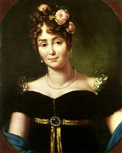

XVI - Nữ Bá Tước WALEWSKA
Ngày 1.1.1807, toàn thể dân chúng xứ Pologne đều nô nức đợi chờ. Vâng, họ chỉ còn biết đợi chờ thôi, vì họ đã hoàn toàn chiến bại, và đau khổ xót xa nhìn thấy Tổ quốc thân yêu của họ đã bị xâm lăng và chia sẻ lần thứ ba trong Lịch sử. Ba địch thủ ghê gớm nhất ở Trung Âu, ba hoàng đế tàn bạo của Nga, Đức và Autriche, đã thông đồng với nhau dùng võ lực để cướp đất Pologne và chia mỗi người một khu vực: Russie lãnh phần Lithuanie và Ukraine. Autriche lấy Cracovie, Varsovie, Lublin. Prusse (Đức) lấy hết một vùng từ sông Oder đến sông Niemen. Quốc gia Pologne bị tiêu diệt hẳn không còn gì nữa cả. Vua Stanislas đã phải thoái vị, rồi chết năm 1797. Còn vị anh hùng kháng chiến của nhân dân, là Kossciuszko cũng đã bị quân Nga bắt bỏ tù ở Saint Pétersbourg, sau mấy năm chiến đấu tuyệt vọng.

Marie WALEWSKA (1786-1818)
Dân tộc Pologne, anh hùng khí khái, bây giờ đành phải nuốt nước mắt, cam phận vong nô, chịu kiếp tôi đòi, còn phương tiện nào nổi dậy được nữa để khôi phục giang sơn?
Một tiếng oán hận ngậm ngùi cây đắng đã nức lên dưới ngòi bút của một thi nhân, như tiếng khóc của non sông: Finis Poloniae! (Pologne đã tận số rồi!)
Bỗng ngày 1.1.1807, cả xứ Pologne ngồi nhỏm dậy vui mừng, nghe ngóng, đợi chờ,… Ngài sắp đến đấy chăng? Phải, chính là Ngài đến đây! Tiếng vó ngựa của Ngài bước đi, hùng dũng, nhịp nhàng với tiếng giày của đại hội đang dẫm trên cương thổ Pologne, vang động cả vòm trời Âu châu, làm cho các ngai vàng rung ring chuyển động…Ngài đến để đánh Hoàng đế Alexandre của Nga, đánh Hoàng đế François của Autriche, đánh vua Frédéric của Đức, để sửa đổi lại cục diện của Âu châu. Phải, chỉ có Ngài, Hoàng đế Napoleon Đệ Nhất, anh hùng của nước Pháp cách mạng, là nhân dân Pologne có hy vọng kêu xin giải phóng cho Tổ quốc của họ mà thôi. Cho nên sáng hôm 1.1.1807 nghe tin Napoléon đang kéo đại hội binh mã sang Pologne, vừa đến thành phố Bronie trên đường tiến đến thủ đô Varsovie, thì dân chúng vui mừng ào ạt kéo đến đấy để hoan hô Napoléon. Đàn ông, đàn bà, con nít, ông già, bà lão, cả một dân tộc vong quốc, bị Russie, Autriche Prusse, cướp mất cả đất đai, đứng đông nghẹt hai bên đường, vừa trông thấy Napoléon cỡi con bạch mã oai nghiêm tiến vào kinh đô, muôn nghìn cái miệng đều hô to lên một câu: Hoàng đế muôn năm! Hoàng đế muôn năm!”
Một thiếu phụ rất trẻ và rất đẹp từ trong đám đông dân chúng, nhảy ra, vội vàng quỳ bên chân ngựa của Napoléon, ngước mặt nhìn lên ông với hai giòng nước chảy ràn rụa trên má. Nàng kêu gào:
- Bệ hạ đến đây, nhân dân Pologne vui mừng đón tiếp, tôn ngài như một vị Chúa, xin Ngài thương xót truyền lệnh cho những kẻ xâm lăng hãy trả lại Tổ quốc của chúng tôi cho chúng tôi!
Napoléon cảm động quá, liền sai quân thị vệ cấp tốc đi kiếm một bó hoa. Ông trao bó hoa tặng giai nhân, với một nụ cười, và bảo:
- Trẫm muốn gặp bà tại kinh thành Varsovie.
Mỹ nhân cung kính cúi đầu cảm tạ.
Người thiếu phụ kiều diễm ấy, được vinh dự nhận bó hoa của Napoléon trao tặng, chính là Nữ Bá Tước De Walewska.
Màu tóc vàng rực rỡ như ánh thái dương, đôi mắt xanh như màu da trời, hình vóc thướt tha duyên dáng, nhưng nữ bá tước de Walewska luôn luôn đội nón màu đen với một tấm voan đen phủ hai bên, từ ngày tổ quốc Pologne của bà bị diệt vong.
Nhũ danh là Marie Laczinska, bà là con gái một gia đình nghèo, nhưng đã lừng danh vì nhan sắc sầu mơ diễm ảo. Bà mới 16 tuổi, cha mẹ đã gả bà cho một ông Bá tước, già 74 tuổi, tên là Colonna de Walewice-Walewski, nhưng là triệu phú. Bà sống cạnh người chồng này, chẳng biết yêu thương hạnh phúc là gì. Tuy còn trẻ tuổi, và vẫn được đồng bào của bà rất mến phục vì lòng nhiệt tâm ái quốc của bà. Bà đã khóc ròng rã từ khi nước Pologne bị hai hoàng đế nước Russie, nước Autriche và vua xứ Prusse dùng vũ lực đến cướp lấy và chia sẻ thành ba mảnh để mỗi nước chiếm lấy một khu vực sáp nhập vào đất đai của họ.
Hôm gặp Napoléon, Nữ bá tước de Walewska đã 19 tuổi. Napoléon 36 tuổi.
Napoléon đến Varsovie, ba hôm sau có buổi đại hội. Nữ bá tước de Walewska được mời đến dự. Hoàng đế Pháp mê sắc đẹp của bà đến đỗi giữa lúc các quan khách đang khiêu vũ, nhịp nhàng theo nhịp điệu du dương, thì Napoléon viết trên một mảnh giấy mấy dòng tán tỉnh vụng về sau đây, đưa quan thị vệ đến trao tận tay Nữ bá tước:
“Giữa phòng tiệc đông đảo, ta chỉ nhìn thấy bà, ta chỉ để ý đến bà, ta chỉ ngắm nghía bà. Bà trả lời gấp cho N. biết cảm tình thế nào, ta nóng lòng đợi thư hồi âm”.
Nữ Bá Tước Walewska xem giấy chỉ mỉn cười nhã nhặn mà không trả lời. Tuy rằng bà rất tôn sùng Hoàng đế Napoléon, cất khâm phục bậc anh hùng tài hoa siêu việt, nhưng dù sao bà vẫn là một phụ nữ có đôi chút lòng tự ái, lẽ nào nhất kiến vi kiến Hoàng đế buông lời chọc ghẹo mà bà đã ưng thuận ngay ư?
Ba lần, Napoléon sai người đến thuyết phục giai nhân, ba lần nàng mỉm cười, từ chối.
Napoléon không giận. Nhưng hôm sau, hôm sau nữa, hôm sau nữa, liên tiếp ba hôm như rứa, Hoàng đế cứ viết thư gửi đến nữ Bá Tước tán tỉnh bà, khen ngợi bà, tỏ tình tha thiết yêu đương. Giai nhân cương quyết chối từ, viện lẽ nàng đã có chồng. Nàng không thể dâng trái tim của nàng và hiến tấm thân của nàng cho Hoàng đế được.
Napoléon buồn rầu bực tức, có khi nổi giận, hăm he dọa nạt, có khi lại xuống nước, làm lành, năn nỉ, ỉ ôi.
Thái độ trung trực và cương quyết của bà càng tăng phẩm giá của Nữ bá tước de Walewska. Nhưng chính phủ lâm thời vong quốc của Pologne, biết rõ cuộc tình duyên trắc trở của Napoléon, liền viết thư sau đây gởi Nữ Bá Tước Walewaka:
“Hồi xưa nàng Esther ưng thuận làm vợ vua Assuérus của nước Perse, đâu phải vì tình yêu mà chỉ vì lòng ái quốc nhiệt thành của nàng muốn cứu dân tộc Juifs khỏi bị diệt vong. Và Esther đã tìm được hạnh phúc và hãnh diện vì đã cứu được Quốc gia của nàng.
Thưa bà, chúng tôi cũng mong ước thấy bà được hạnh phúc ấy và hãnh diện ấy.
Chúng tôi xin phép nhắc bà một câu nói bất hủ của Fénelon, một nhà triết học lừng danh, một văn hào Pháp, một tu sĩ có đức độ cao siêu. Ông đã nói: “Les homes qui ont toute autorité en public, ne peu-vent, par leurs délibérations, établir aucun lien effect-tif si les femmes ne les aident à l’exécuter” (Những người đàn ông dù có đủ cả uy quyền đối với công chúng, cũng không thể, với những cuộc đàm thoại xây dựng được một liên hệ cụ thể nào, nếu không có những người đàn bà giúp họ thực hành công tác ấy).
Nữ bá tước de Walewska suy nghĩ rất nhiều về bức thư đó của những nhà ái quốc Pologne. Đã vậy, hầu hết những bạn hữu thân tín của nàng, cả dư luận của dân chúng, cho đến cả nhà Đại thi sĩ danh tiếng nhất của Pologne thời bây giờ là Mickiewicz cũng khuyên bảo nàng: “Hoàng đế Napoléon là một bậc vĩ nhân của Lịch sử. Chỉ có Ngài là giải phóng được Tổ quốc chúng ta, nếu Ngài muốn. Vậy Nữ bá tước nên vì nước mà quên mình. Phu nhân hy sinh tấm thân nghìn vàng cho Napoléon, chính là hy sinh cho Tổ quốc vậy!”
Hy sinh như nàng Esther đã hy sinh cho Hoàng đế Assuérus chăng. Nghe theo tiếng gọi của tình yêu Hoàng đế, tức là nghe theo lời khuyên bảo của nhà tu sĩ Fénelon và nhà thi hào Mickiewisz chăng?
Gần một tuần lễ, Nữ bá tước de Walewska băn khoăn thắc mắc vì vấn đề tâm sự, tiền thối lưỡng nan…Yê Napoléon?....Khỏi yêu Napoléon? Hy sinh vì ái tình? Hy sinh vì Tổ quốc?
Sáu đêm trường nàng trằn trọc không ngủ…
Napoléon cũng thế! Ban ngày hoàng đế lo sửa soạn chiến tranh, một mình ngài điều binh khiển tướng đế phải đương đầu với một nước Russie to lớn hùng cường, một nước Autriche cũng anh dũng, một nước Prusse đang hăng hái quyết chiến để giữ gìn lãnh thổ. Nhưng ban đêm, ngài nằm thao thức, buồn rầu, vì người đẹp của Pologne không hề nhượng bộ.
Ngài ngồi dậy, viết bức thư cuối cùng sau đây để hôm sau, sáng ngày thứ bảy, sai quan thị vệ trao đến mỹ nhân:
“Phu nhân không sao làm thỏa mãn nhu cầu tha thiết của một trái tim say mê chỉ muốn chạy đến ôm lấy chân ai mà tỏ tình yêu dấu? Ta chỉ tiếc, vì lòng ước muốn của ta vô bờ bến, nhưng nhiệm vụ của ta cũng quá nặng nề, nên ta không làm sao đến cạnh phu nhân để tỏ hết nỗi lòng! Đến đây! Ai ơi, đến đây với ta! Ta sẽ càng mến thương tổ quốc của em nhiều hơn nếu em thương hại trái tim đang đau khổ của ta!”
Nữ bá tước đã trằn trọc sáu đêm, với hình ảnh chói lọi của Napoléon mà nàng tôn kính, mà nàng vẫn do dự không dám ôm ấp vào lòng.
Bỗng sáng ngày thứ bảy, vừa ngủ dậy, nàng nhận được bức thư tha thiết chân thành của ai kia…
Nàng xúc động quá, ngồi lặng lẽ xuống ghế, nhắm mắt mơ màng…Nàng mới có 19 tuổi. Bỗng nữ bá tước tài hoa son trẻ bừng mắt đứng dậy, tươi cười nói với quan thị vệ:
- Nhờ ông về tâu Hoàng đế, chốc nữa tôi sẽ xin đến hầu chuyện với Ngài về số phận của Quê Hương tôi.
Một lát sau, Napoléon đang chăm chú nghiên cứu các địa điểm chiến trường trên một bản đồ lớn trải trên mặt bàn, nữ công tước Waleweka bước vào. Nàng mặc áo đen, đội nón đen phủ tấm voan đen để tang cho Tổ quốc. Nàng quỳ bên chân Napoléon tha thiết van lơn:
- Tâu hoàng thượng, đây không phải là Nữ bác tước de Walewska, mà đây là xứ Pologne đến quỳ bên chân ngài. Xin ngài hứa cho một lời châu ngọc: xứ Pologne chỉ ngưỡng vọng lên ngài, nhờ ngài giải phóng cho quê hương tôi khỏi bị làm nô lệ! Chúng tôi mong được vinh dự tôn Hoàng thượng làm bậc ân nhân cứu dân tộc Pologne!
Napoléon mỉm cười, nâng đỡ nữ bá tước dậy, mời nàng ngồi:
- Tôi hứa với phu nhân, tôi sẽ giải phóng cho Pologne,
Nữ bá tước liền đứng dậy:
- Tâu Hoàng đế, Hoàng đế có cho phép tôi đêm nay trở lại dâng Hoàng đế tấm lòng tri ân không bờ bến của tôi?
- Đêm nay ta chờ phu nhân.
Nữ bá tước kính cẩn chào, đi ra.
8 giờ tối, Napoléon vẫn còn đứng trước bản đồ, sắp đặt chiến thuật dàn trận trên sông Danube. Nữ bá tước bước vào, lần này bà mặc áo hồng rực rỡ. Napoléon cười hỏi:
- Bây giờ là nữ bá tước đến, hay là xứ Pologne đến?
Walewska mỉm cười duyên dáng:
- Tâu Hoàng đế đây là người yêu của Ngài đến!
- Thế thì bây giờ đến lượt anh quỳ bên chân em.
Nói xong, Napoléon quỳ bên chân nàng hôn lên chân nàng, và lẩm bẩm ba tiếng thông thường mà tất cả những người yêu đều nói, bất cứ là vị Hoàng đế hay chú thuyền chài:
- Anh yêu em!
Walewska âu yếm cúi xuống đỡ Napoléon dậy, không ngờ hoàng đế kéo tay bà xuống, đè bà nằm luôn lên đất, không kịp đưa nhau lên giường nệm hoa…
WALESWKA SAY MÊ NAPOLÉON
Vì tổ quốc, với sự đồng lõa của tất cả một dân tộc đang tha thiết hy vọng nơi nàng, nữ bá tước Marie de Walewska, một mỹ nhân 19 tuổi, đã hiến cả tấm thân nghìn vàng của nàng cho Napoléon.
Nhưng, kỳ diệu thay, Marie vừa rơi trong tay vị anh hùng trong một phút say mê, thì lúc tỉnh lại nàng cảm thấy không thể nào rời xa chàng được nữa. Người đàn ông đã chiếm được trái tim của nàng và xác thịt của nàng, bây giờ đây không phải là hoàng đế Napoléon, mà là người yêu của nàng. Để đáp lại sự hy sinh tuyệt đích của Marie, chàng đã tặng cho nàng một tuyệt thú say sưa, tràn trề hạnh phúc. Nàng sung sướng thú thật với Napoléon: “Em mê anh mất rồi!”
Napoléon ôm ghì đầu nàng, cái đầu nhỏ nhắn, xinh xắn, ngào ngạt hương xuân, áp vào ngực chàng và âu yếm bảo:
- Từ nay em ở luôn bên cạnh anh nhé?
Marie đê mê rung động, khẽ đáp:
- Vâng.
Đêm ấy là mồng 7 tháng 1 năm 1807. Cuộc tình duyên của Marie de Walewska đã thành ra một việc chánh thức, gần như một quốc sự, Napoléon công khai giới thiệu nàng là người “vợ Ba Lan” của ông. Các nhà ái quốc Pologne chứa chan hy vọng. Họ biết rằng Hoàng đế nước Pháp và Nữ Bá tước Marie đã thành thật gắn bó cùng nhau, thì chỉ có cô vợ trẻ đẹp ấy là có thể van xin ông giữ lời hứa giải phóng cho xứ Pologne.
Lịch sử đã chứng nhận rằng vì yêu Marie de Walewska mà Napoléon đã thực hiện được lời hứa ấy một phần nào, lời hứa ái tình và danh dự. Ông bắt buộc Hoàng đế Alexander của nước Russie và vua Prusse trả lại cho Pologne những lãnh thổ mà Russie và Prusse đã xâm chiếm. Ông đã tạo ra một khu vực Pologne độc lập, gọi là Grand Duché de Varsovie và lập một bộ đội Pologne trao cho Thống chế của Pologne là Poniatawshi làm tổng tư lệnh. Ngần ấy cũng đủ cho nhân dân xứ Pologne biết ơn Napoléon, và Marie de Walewska yêu ông mỗi ngày mỗi tha thiết say mê hơn. Một buổi tới, Napoléon có chút ít thì giờ rảnh, ngồi bàn cặm cụi đặt một bài hát cho quân đội của ông. Marie de Walewska thương ông làm việc quá nhiều, nằm giường khẽ gọi ông:
- Bỏ đấy, mình ạ, đừng thèm làm công việc nhỏ mọn. Lại đây nằm với em!
Napoléon vứt bút, xé tờ giấy mà trên đó ông đã ghi được vài câu hát, và đến giường nằm với người yêu.
Trong thời gian một tháng ở Varsovie, Napoléon và Marie de Walewska đã sống những ngày yêu đường đầy ngập hạnh phúc.
Ngày 7.2.1807, Napoléon kéo đại đội binh mã đến nghinh chiến với quân đội Russe tại Eylau. Marie đến Vienne để chờ đợi tin tức. Chiều tối, sau khi tiếng súng đã thưa dần và quân Pháp đã thắng trận, Napoléon lấy một miếng giấy đặt trên mặt trống, viết vội vài dòng sau đây, gởi về Marie:
“Bạn diệu hiền của anh đi, khi em đọc thư này chắc em đã nghe tin về chiến cuộc rồi. Trận giặc đã kéo dài hai ngày và hôm nay quân ta đã toàn thắng.
“Con tin của anh vẫn quanh quẩn bên em. Yêu anh nhé, em Marie hiền lành ngoan ngoãn của anh! Và tin nơi tình yêu của N.”
Viết xong bức thư tình cho Mari de Walewska, Hoàng đế để lại viết tiếp luôn bức thư tình khác gởi cho bà vợ Joséphine ở Paris cũng đang chờ đợi ông…
Nhưng ông không về với Joséphine. Thắng trận xong Napoléon ở lại nơi lâu đài Finekenein để cho quân đội nghỉ ngơi trong mùa lạnh. Suốt 3 tháng ở nơi đây, Walewska và Napoléon sống một tuần trăng mặt say sưa nhất trong đời ông. Trước mặt bá quan và các vị đại sứ ngoại quốc, các vì vua chúa Âu châu, Marie de Wamewska được coi như một vị Hoàng hậu. Ngoài những giờ tiếp khách, Hoàng đế và cô vợ trẻ tuổi âu yếm với nhau như một đôi uyên ương say mê khăng khít chỉ biết hưởng hạnh phúc của tình yêu.
Tháng 6-1807, Napoléon lại đại thắng quân Nga trên sông Niémen. Hoàng đế Alexandre bắt buộc phải ký hòa ước tại Tilsit. Quân đội Napoléon ca khúc khải hoàn trở về Pháp. Marie de Walewska buồn bã, sợ phải từ giã Napoléon, nhưng ông muốn nàng theo ông về Paris. Ông để nàng ở một lâu đài tráng lệ, và mỗi ngày ông đều đến thăm nàng, với mối tình chung thủy.
Năm 1809, Napoléon lại sang đánh giặc ở Autriche. Walewska cũng theo ông, như hình với bóng. Ông sắp đặt cho nàng ở một cung điện nguy nga tại Vienne, và yêu quý nàng như cặp vợ chồng mới cưới. Rồi nàng có thai…
Napoléon hết sức vui mừng, và bây giờ ông có chứng cớ chắc chắn rằng ông có con trai để nối dòng. Cưới Joséphine về mấy năm không có con, đó là lỗi tại Joséphine không sinh sản được nữa, chứ nhất định không phải tại ông.
Cũng năm ấy, Napoléon ly dị với Joséphine và năm sau, 1810 hoàn cảnh chính trị của nước Pháp xúi giục ông cưới Công chúa Marie Louise, con gái của Hoàng đế nước Autriche, về làm hoàng hậu chính thức của nước Pháp.
Đáng lẽ Napoléon cưới Marie de Walewska, nhưng theo ý kiến chung của Triều đình, Hoàng đế nước Pháp kết hôn với con gái Hoàng đế Autriche, sẽ có ảnh hưởng tốt hơn cho hòa bình của Âu châu và củng cố đế quốc Pháp thêm vững chắc hơn.
Mặc dầu chính thức lấy Công chúa Marie Louise làm Hoàng hậu Napoléon vẫn giữ nguyên vẹn tình yêu tha thiết với Marie de Walewska. Năm 1810, Marie sinh được con trai, đặt tên là Alexandre Walewski. Napoléon ban cho người con ngoại tình này chức vị Bá tước. Năm 1811, Hoàng hậu Marie Louise cũng sinh con trai được tôn làm Quốc vương La Mã (roi de Rome).
Nếu đừng có chiến tranh đảo lộn tình hình Âu châu một lần nữa thì Triều đại Napoléon được vững bền, vẻ vang biết mấy!

Marie Louise
PAPA HOÀNG ĐẾ
Nhưng trong lúc ai cũng tưởng rằng uy thế của Napoléon đang thời lẫm liệt nhất, thì định mệnh của ông lại xoay chiều ngược lại. Ngôi sao của vị César của nước Pháp bắt đầu lu mờ.
Sau một chiến trận kinh khủng mà một mình phải chống bốn địch thủ ghê gớm: Anh, Đức, Nga, Autriche, ông bị đại bại, và bắt buộc phải thoái vị ngôi Hoàng đế. Ngày 21.4.1814 ông bị bốn nước đồng minh Âu châu đẩy qua cù lao Elbe, giữa Địa Trung Hải.
Sáu trăm binh sĩ và hai vị Thống chế trung thành nhất với ông, theo ra hầu hạ ông nơi hoang đảo.
Hoàng hậu Marie Louise cũng hứa sẽ đem con ra ở với ông. Nhưng vị anh hùng thất thế không ngờ bị bà vợ bỏ rơi, không một lời thương nhớ.
Marie Louise đem Quốc vương La Mã về ở với Hoàng đế Autriche, là bố vợ và cũng là thù địch của Napoléon, Napoléon chờ đợi đêm ngày, biệt vô âm tín…
Trong lúc ông đang tức giận Marie Louise thì được tin Nữ Bá tước Marie de Walewska, cô vợ Polonaise trẻ đẹp và diệu hiền của ông, ẵm con trai bốn tuổi ra thăm ông. Nàng đi một chiếc tàu buồm nho nhỏ, ra đến đảo Elbe vào lcus trời tối mù mịt, đêm 1.9.1814. Napoléon ở nhà, đợi chờ từ lúc hoàng hôn. Chờ mãi chưa thấy nàng đến, ông sốt ruột đi bách bộ băng qua một khu rừng hoàng vắng để đi đón nàng. Gặp nàng giữa rừng, ông ôm chầm lấy người yêu bảo:
- Anh chờ em lâu lắm!
Đứa con trai bốn tuổi của nàng ẵm trong tay Alexandre Walewski, bỗng cất tiếng ngây thơ, chào ông:
- Bonjour Papa Empereur! (con chào papa Hoàng đế).
Napoléon phì cười, cõng con lên lưng, và dắt vợ vào một chòi hoang giữa rừng, ngủ luôn nơi đây…
Trong tất cả những người vợ và người yêu của Napoléon, Marie de Walewska là người hiền lành nhất, yêu ông nhiều nhất, và trung thành với ông nhất.
Tuy nàng lo ngại rằng HOàng hậu Marie Louise có thể ra đảo Elbe để ở với Napoléon và hai bà không ưa nhau nhưng nàng cũng van lơn Hoàng đế:
- Em đến đây dâng cả đời em cho anh. Em chỉ xin anh một túp nhà nho nhỏ, ở một xó nào kín đáo cũng được, xa anh cũng được, miễn là khi nào anh gọi đến em, thì có em sẵn sàng chạy đến anh ngay.
Napoléon xiêu lòng, nhưng lúc bấy giờ ông đang âm mưu cuộc thoát ly để trở về nước Pháp, giành lại ngôi báu, Ông khẽ bảo nàng:
- Không được đâu em ạ. Em phải về ngay.
Marie de Walewska đứt từng đoạn ruột, nhưng yêu chồng, chiều chồng, tuân lịnh chồng, đành phải âm thầm đau xót từ giã phu quân. Đứa con bốn tuổi lại bắt tay cha, với giọng nói ngây thơ cảm động:
- Bonjour Papa – Empereur (1).
Napoléon chạy vào cái chòi hoang ngồi khóc nức nở. Tám ngày liền, ông rầu rĩ, nằm luôn trong chòi, không ló mặt ra.
Bốn tháng sau, ngày chủ nhật, 26.21815, Napoléon kéo 600 người lính trung thành của ông và hai vị Thống chế xuống tàu, vượt biển, đổ bộ lên đất Pháp. Con Chim Đại Bàng lại bay vụt về Paris được toàn thể quân đội và dân chúng hoan hô dậy trời dậy đất. Napoléon trở lại ngôi Hoàng đế.
Nhưng hai năm sau, 1817, Marie de Walewska đau nặng, trút hơi thở cuối cùng, miệng còn lẩm bẩm ba tiếng:
- Napoléon!.. Je t’aime! [2]
Chú thích:
[1] Kính chào Cha, Hoàng Đế
[2] Napoléon…em yêu anh!...)